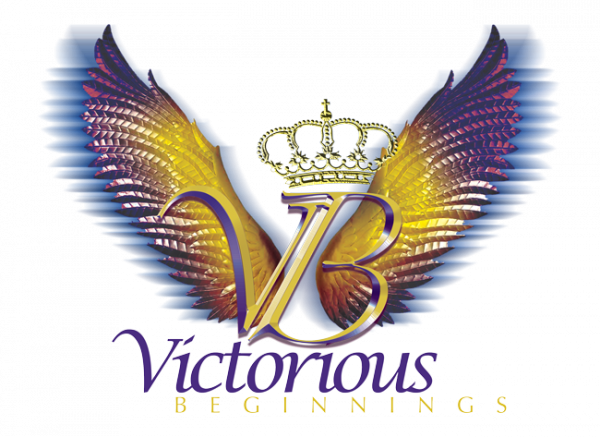

About Us
The Power of Faith and Therapy: Nurturing Wholeness and Resilience
In a world filled with challenges, many people seek solace, guidance, and a path toward healing. At Victorious Beginnings, LLC, we understand the profound impact that faith and therapy can have on individuals, couples, and families. Our founder, Nichole Henderson, is dedicated to bridging the gap between faith and mental wellness through an approach that supports healing, resilience, and personal growth.

Why Faith Matters
Faith can serve as a guiding light during life’s most difficult moments, offering hope, purpose, and encouragement. At Victorious Beginnings, we integrate biblical principles into our faith-based approach to support spiritual growth, strengthen identity, and encourage meaningful healing. For those who draw strength from faith, it can be an important source of resilience throughout their journey.
The Healing Power of Therapy
Therapy is an act of courage and self-care. Drawing on her background in marriage, family, and child therapy, Nichole combines person-centered, solution-focused approaches with evidence-based practices to help clients navigate life’s challenges, develop coping skills, and work toward meaningful change.
A Partner on Your Journey
Nichole’s commitment to compassion, acceptance, and personal growth helps create a supportive environment where clients can feel heard and understood. Having navigated life’s own challenges, she brings empathy and understanding to her work, partnering with clients as they pursue wholeness, resilience, and a more fulfilling life.
At Victorious Beginnings, we believe faith and therapy can work together to nurture hope, strengthen identity, and support lasting growth. Whether you are seeking spiritual guidance, emotional wellness, or a deeper sense of purpose, we welcome you to explore how our approach can support your journey toward Victorious Living.
About Nichole
Nichole Henderson is the Founder and CEO of Victorious Beginnings, LLC. Since establishing her private practice in Las Vegas, Nevada, in 2012, she has been dedicated to providing quality, faith-based services to individuals, couples, families, and groups.
Nichole attributes her work in mental and behavioral health to her ability to connect with others through unconditional acceptance, compassion, and a commitment to helping individuals build resilience, experience wholeness, and develop lasting, healthy relationships.
Her approach combines person-centered, solution-focused therapy with evidence-based practices to help clients navigate life’s complexities and work toward meaningful, lasting change.
In addition to her professional experience, Nichole holds a Bachelor of Science in Business Administration and a Master of Arts in Marriage, Family, and Child Therapy. As a Christian counselor, she integrates spiritual guidance and biblical principles into her work to support spiritual growth, a stronger sense of identity, and emotional and mental wellness.
Nichole also facilitates long-standing emotional support groups and serves as a lay pastor, volunteering her time to support church leaders, parishioners, and congregations in Texas and Nevada.
At the heart of Nichole’s philosophy is the belief that faith combined with action can help people move beyond fear and toward meaningful transformation. Drawing from her own life experiences, professional knowledge, and faith, she seeks to help individuals discover their strengths, navigate life’s challenges, and embrace a more fulfilling, victorious life.
As Featured In
Invite Nichole to Speak
Bring a message of healing, hope, and restoration to your next event.
Request Speaking Availability (opens in a new tab)